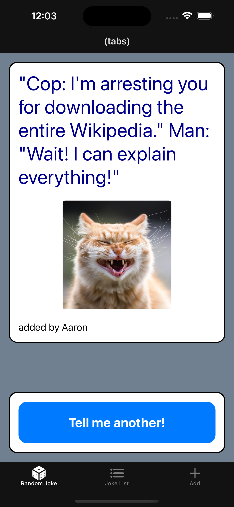
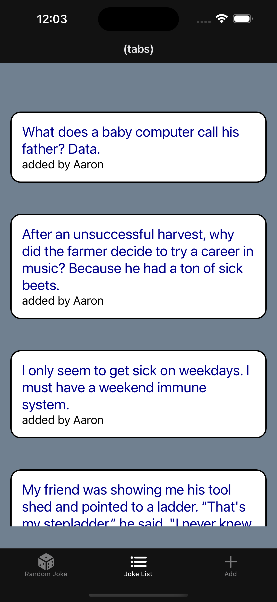
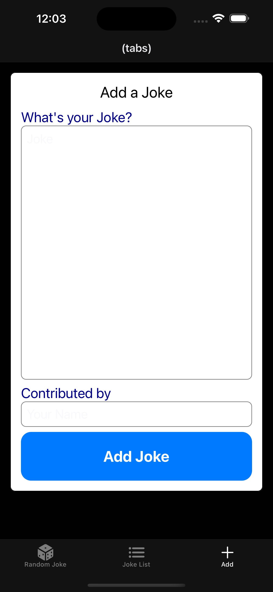

Assignment 10: Django REST API and React Native Client
due by 9:00 p.m. EDT on Friday 11/14/2025
Preliminaries
In your work on this assignment, make sure to abide by the collaboration policies of the course.
If you have questions while working on this assignment, please post them on Piazza! This is the best way to get a quick response from your classmates and the course staff.
Learning Objectives
After completing this assignment, students will be able to:
-
Implement a REST API for a Django application.
-
Use basic RN components including
View,Text,Image,StyleSheet, andScrollViewto create a (read-only) user interface. -
Use the
Tabs template as a starting point for a project, and use tab navigation betweenScreens. -
Connect a React Native application to a REST API to GET data for display.
-
Develop a RN interface to create data, ans POST to a REST API.
-
Test your RN application on the iPhone or Android simulator for testing.
Pre-requisites: Expo and React Installation
Before you can build your first React Native application, you will need to follow the instructions on Blackboard about installing the Expo Framework.
You should also go through the first batch of React Native tutorial videos (on Blackboard) and follow along with the examples.
Task 1: Django Application and REST API
intro
-
Create a Django App called
dadjokes. This app will have 2 data models:-
Joke, which will store thetextof a joke, thenameof the contributor, and thetimestampof when it was created. -
Picture, which will store theimage_urlof a silly image or GIF, thenameof the contributor, and thetimestampof when it was created. Note: thePictureis independent of theJoke, i.e., no foreign-key relationship.
Add at least 5
Jokes (must be G-rated; sexist or racist jokes are not funny, will not be tolerated, and will result in a grade of 0 on this assignment and an audience with the CAS Dean of Students).Add at least 5
Pictures (must be G-rated).Define views and templates (simple is ok) to support the following URLs:
''- show oneJokeand onePictureselected at random'random'- show oneJokeand onePictureselected at random'jokes'- show a page with allJokes (no images)'joke/<int:pk>'- show oneJokeby its primary key'pictures'- show a page with allPictures (no jokes)'picture/<int:pk>'- show onePictureby its primary key
Test your application thoroughly from a web browser client.
-
-
Implement a REST API for your web application.
An example will be show in class on Tuesday 11/11/25.
The REST API will enable HTTP
GETfor the following APIT endpoints (URLs):'api/'- returns a Json representation of oneJokeselected at random'api/random'- returns a Json representation of oneJokeselected at random'api/jokes'- returns a Json representation of allJokes'api/joke/<int:pk>'- returns a Json representation of oneJokeby its primary key'api/pictures'- returns a Json representation of allPictures'api/picture/<int:pk>'- returns a Json representation of onePictureby its primary key'api/random_picture'- returns a Json representation of onePictureselected at random
The API endpoint
'api/jokes'should also accept an HTTPPOSTto create a newJoke.You will need to create a
Serializerclass for each of your models, as well as specific REST API views to support each URL. You can follow the example and adapt it to your needs.Test your API from a web browser client.
Important: Add files to git and deployment
-
You’ve just modified your database structure, and added some data records.
-
This is an excellent time to add your files to git, commit your changes, and push your changes to GitHub before anything gets F@&#ed up.
-
Deploy your web application/API to
cs-webapps.bu.edu, and test that it works in the deployment environment, as you will need this to be able to use the API in your mobile client (in task 2)
Task 2: React Native Client
In this task, you will create a mobile client application which connects to your REST API to GET/POST data, and displays it in the mobile app.
-
Getting Started
Create a new working directory, parallel to your
djangodirectory, calledreact. At the Terminal, change into yourreactdirectory. Begin a new React Native application using the tabs template, using this command:npx create-expo-app@latest --template tabs DadJokes
In VS Code, add your
reactdirectory to your workspace for easy access to the files.Before you begin writing any code, verify that you can run your app in the simulator. Change into the
DadJokesdirectory, and run the simulator with this command (on Mac):npm run ios
For windows: use the command:
npm run
and then use the android or web-based simulator, or scan the QR code to open the Expo App on your mobile device.
-
Modify the starter code to create 3 screens.
The starter code contains a
DadJokes/app/(tabs)directory which defines the layout of the application as well as two screens. Modify this code (and rename the files appropriately) to create 3 screens:index,jokes_list, andadd_joke.Verify that you can run the app and navigate to each screen before proceeding. The most common error is a naming error (i.e., file name does not match the name you are using in the
_layout.tsxwhich defines the several tabs and screens navigation). -
In the
index.tsxfile, modify the code to export a default functionIndexScreen.This screen show a single
Joke, along with aPicture, both of which will be retrieved from the Django web application via the REST APIs:-
Use a
GETrequest to the URL'api/random'to retrieve one Joke (i.e., it’stextandcontributor) -
Use a
GETrequest to the URL'api/random_picture'to retrieve one Picture (i.e., it’simage_url)
The details about how to present the joke, including sizing, styling, etc., is entirely up to your discretion.
Do we include: - details about defining the function to call the API? - use of variables to hold data/pass it to the
components? - which components to use in the screen? -
-
Define the style information for your app.
Create the file
DadJokes/assets/my_styles.ts. In this file, define and export aStyleSheetcalledstylesin which you will define styling information for each of the screens.In each of the other files that defines a screen (e.g.,
index.tsx), add the followingimportstatement at the top, to gain access to your style information:import { styles } from '../../assets/my_styles';
Now you can reference specific styles defined in
my_styles.tsxto set thestyleproperty of each component, e.g.:<Text style={styles.titleText} ... > -
In the
jokes_list.tsxfile, modify the code to export default functionJokeListScreen.This screen show a listing of
Jokes which will be retrieved from the Django web application via the REST API.- Use a
GETrequest to the URL'api/jokes'to retrieve a list ofJokes.
The details about how to present the joke list, including sizing, styling, etc., is entirely up to your discretion.
Do we include: - details about defining the function to call the API? - use of variables to hold data? - use of
to display/iterate listing of jokes - use of variables to hold data/pass it to the components? - which components to use in the screen? - Use a
-
In the
add_joke.tsxfile, modify the code to export a default functionAddJokeScreen.This screen display text inputs to collect a new joke as well as the name of the contributor, and a submit button.
The app will then
POSTthis data to the Django web application via the REST API.- Use a
POSTrequest to the URL'api/jokes'to POST a singleJoke.
Test the submission of this data. Add debugging statements in your code to to verify that you are actually sending the
POSTto the Django application (e.g.,Console.log('...')within your app). You can also watch the Django web application’s console to see which URL is called, and what the HTTP response code is (e.g., 200 is “OK”“, 201 is “Created”). - Use a
Sample Implementation
Here are some sample screens for reference only. Do not try to reproduce these.



Submitting Your Work
-
Create a text file within your main django directory called
api_url.txt, containing the URL to your API, and nothing else.For example:
https://cs-webapps.bu.edu/azs/cs412/dadjokes/api.This file will be used by the autograder to locate your web page, so you must get the URL exactly correct, and you must not include any other text or code in the file.
-
Add the teaching staff as collaborators to your GitHub repository with
bu-cs412. Read-only access is fine.Create a text file called
github_url.txtin the root of your project (e.g.,djangodirectory). Paste your GitHub URL in the file.Add these files to your git repository using
`git add -A`.
Commit this to your git repository, using
`git commit -m "Added Assignment 10 REST API."`
Push it to GitHub, using
`git push origin main`
-
Run your app in the simulator, and take screen shots of each screen using COMMAND-S (Mac) or CONTROL-S (Windows).
Save these screen shots using the file names:
index.png,joke_list.png, andadd_joke.png. -
Log in to GradeScope to submit your work.
Be sure to name your files correctly!
In the Gradescope upload page, upload these files:
-
github_url.txt -
api_url.txt -
DadJokes/(tabs)/_layout.tsx -
DadJokes/(tabs)/index.tsx -
DadJokes/(tabs)/joke_list.tsx -
DadJokes/(tabs)/add_joke.tsx -
DadJokes/assets/styles/my_styles.ts -
These 3 screenshots of your app:
index.png,joke_list.png, andadd_joke.png.
Do not upload any of the other files/directories (e.g.,
node_modules) as these are large and we will not need to look at them.* -
This assignment will be graded manually, i.e., no autograder.
Notes:
-
Upload these files to Gradescope before the deadline.
-
You may resubmit as many times as you like before the deadline, and only the grade from the last submission will be counted.